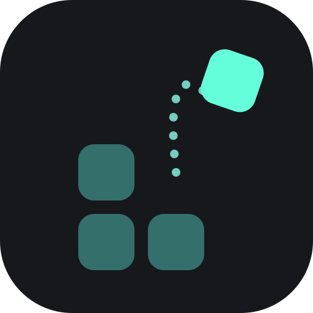
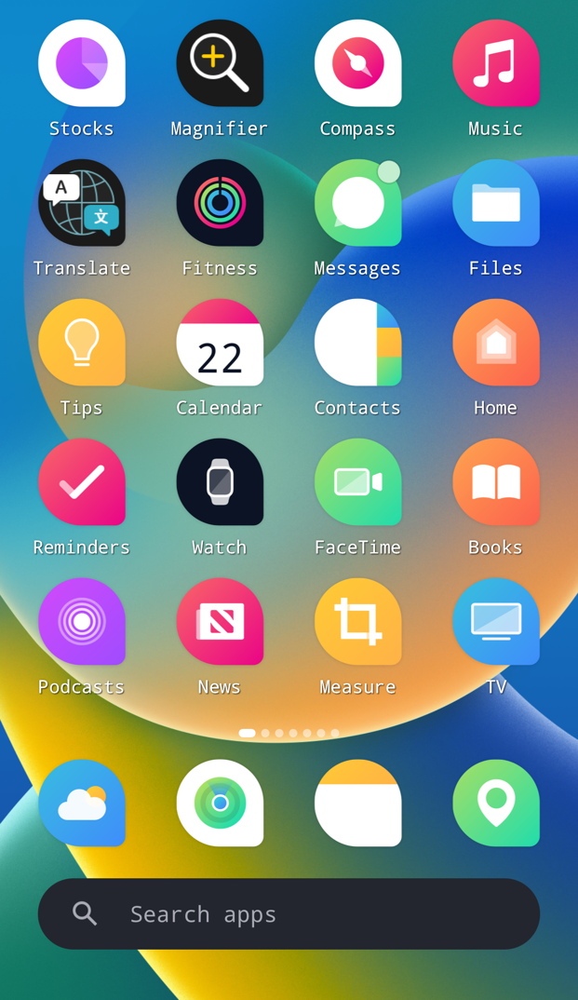
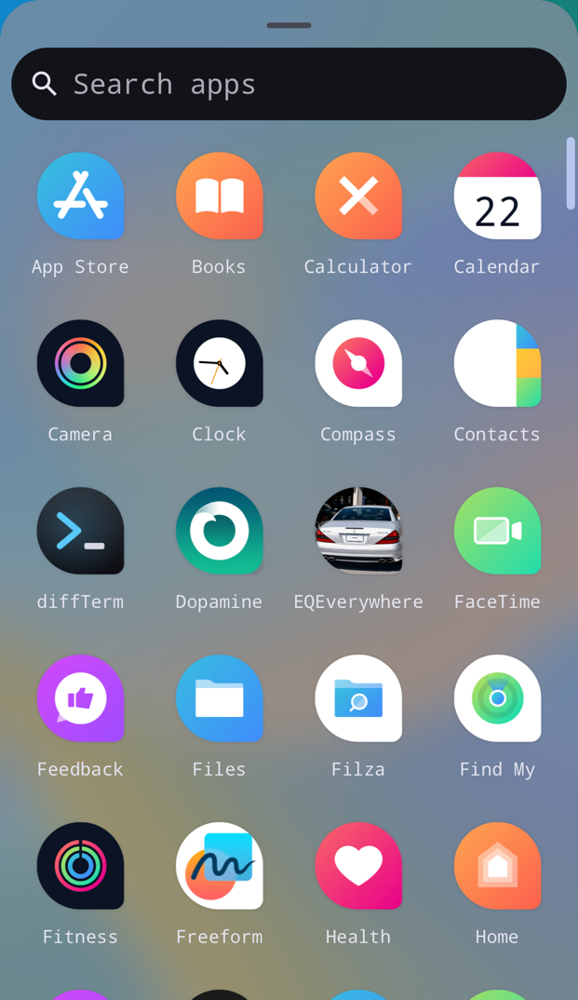
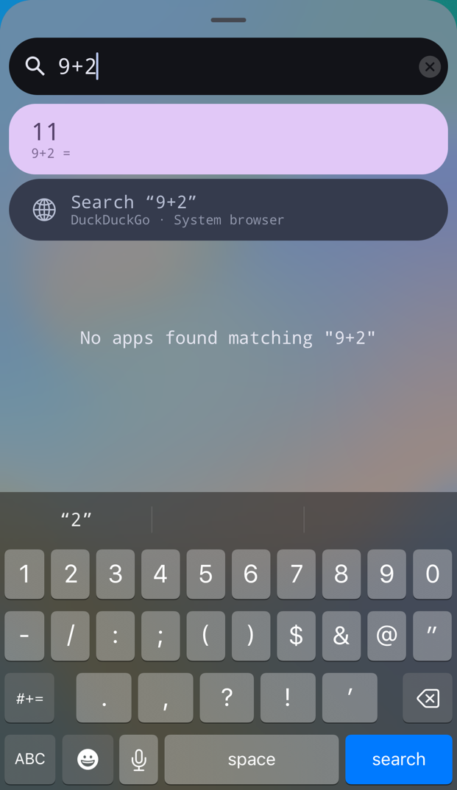
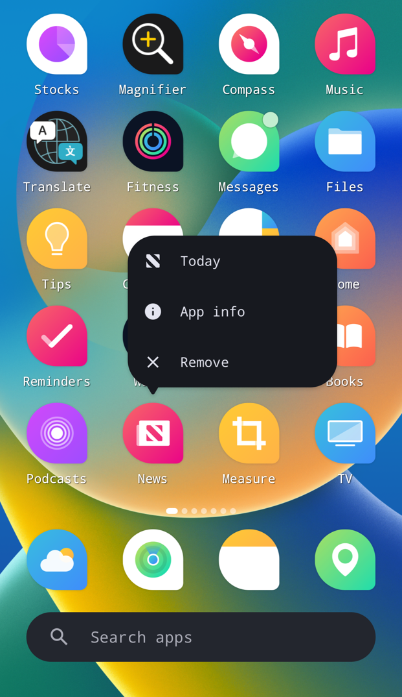
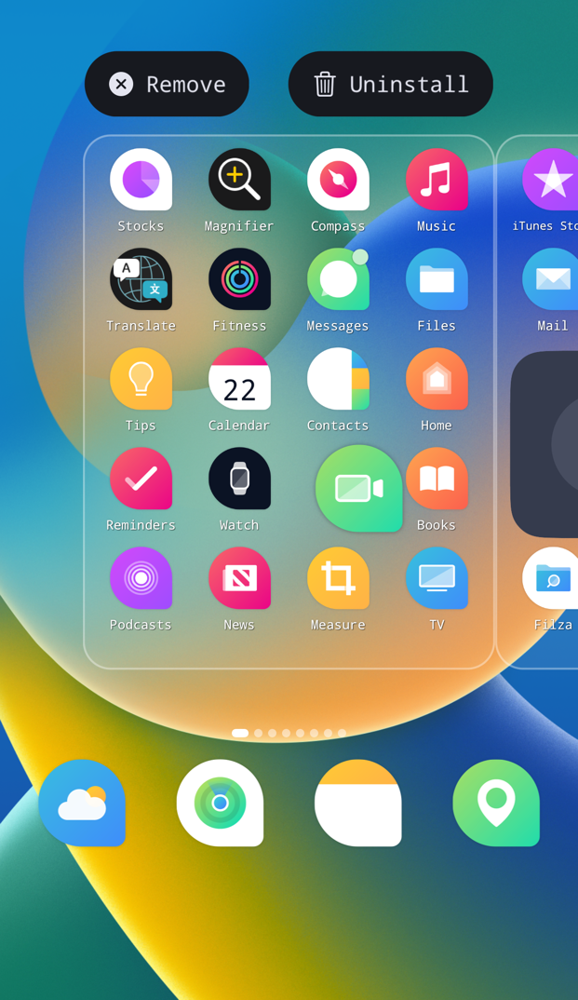
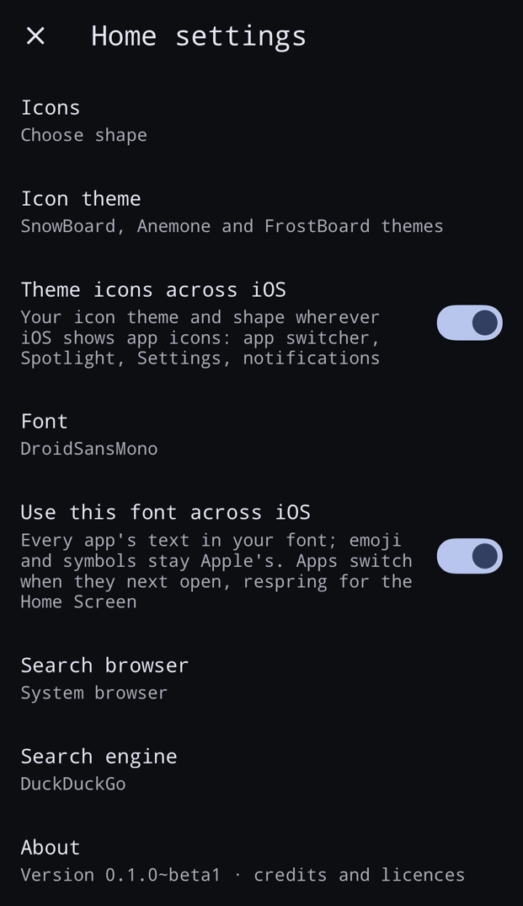

Catapult
Make your iPhone's Home Screen work like Android's.
Catapult swaps the iOS Home Screen for Trebuchet, the one from LineageOS. Everything else stays iOS, and apps still open with Apple's own animation.
Add the repo, then search Catapult.
Made for you if…
Pick the one that sounds like you.
Everything it can do
Home Screen
Laid out by the same rules as on Android, ported from LineageOS.
- Grid sizes
- Dock
- Page dots
- Page transitions
- Search bar on the dock or at the top
- Apple's own open and close animation
- Notification dots
- Long-press shortcuts
- Hidden apps
- Two-line labels
- Double tap to lock
- Lock the layout so nothing moves
App drawer
Swipe up from the Home Screen.
- All apps A to Z
- Fast scroll
- App search
- Quick sums (type 9+2)
- Unit conversions
- Web search
- Pick the browser and search engine
Folders & widgets
- One-page folders
- Android folder animations
- Clock
- Weather
- Now Playing
- Batteries (AirPods too)
- Several sizes
- Material You colours
Your look
On the Home Screen, or switch it on for all of iOS: the app switcher, Spotlight, Settings and notifications.
- 12 icon shapes
- Icon themes
- Use your icons across iOS
- Your own font
- Use the font across iOS
- Emoji stay Apple's
- Proper bold text when the font has a Bold file
Screenshots






Questions
Something broke. How do I get my normal Home Screen back?
If your iPhone's Home Screen keeps crashing right after it starts (5 times in a row), Catapult switches itself off and the normal one comes back. A normal respring doesn't count. You can also uninstall Catapult from Sileo.
Can I put iOS widgets on it?
No, iOS doesn't let them live outside its own Home Screen. Catapult has its own Clock, Weather, Now Playing and Batteries widgets instead.
I use FrostBoard, SnowBoard or Anemone.
Keep using them. Catapult still themes its own icons, and leaves theming the rest of iOS to your engine.
Bold text in my font looks regular.
Put the font's Bold (and Medium) file in the same folder as the one you picked. Catapult uses them for bold text. A font with only one weight stays at that weight.
Is it in my language?
Catapult follows your iPhone's language. LineageOS's own text comes in 96 languages, and everything Catapult added in 27, including Spanish, Portuguese, French, German, Russian, Arabic, Hindi, Japanese, Korean and Chinese. Arabic and Hebrew are translated, but the layout doesn't flip right to left yet. If a line reads wrong, tell me.
I had MakrSas's Trebuchet installed.
Installing Catapult replaces it. Your layout and settings carry over.
Tested on
Not tried yet: iPads, landscape, and iOS 15 on iPhone XS and newer. Tell me how it goes.
| Phone | iOS |
|---|---|
| iPhone 7 | 15.8.6 |
| iPhone 8 Plus | 16.7 |
| iPhone 11 Pro Max | 16.2 |
| iPhone SE (2nd gen) | 17.5.1 |
| iPhone 11 Pro | 18.6.2 |